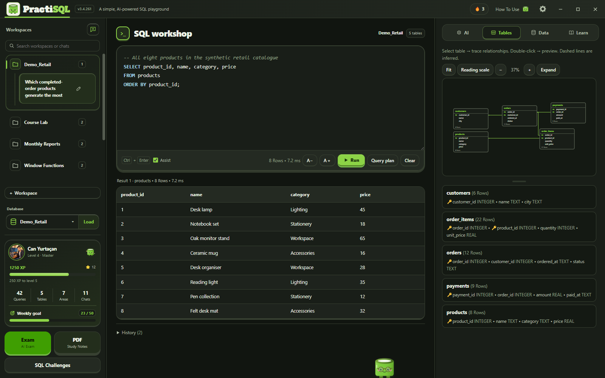

Kayıtları yakından incele
Tabloyu aç. Her ürünü gör.
Sentetik ürün kataloğunu sonuç tablosunda incele. Sorgu, sütun adları ve sekiz ürün kaydı birlikte görünür.
- Dört sütunun ve sekiz kaydın tamamı
- Gerçek SQLite sorgu çıktısı
- Sentetik tanıtım verileri
